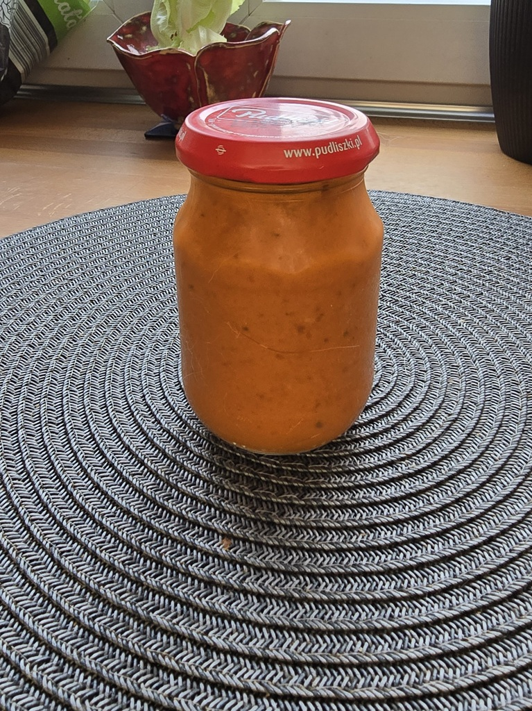

Skład:
- 3 kg czerwonej papryki (waga po oczyszczeniu)
- 2 słoiczki przecieru pomidorowego;
- 2,5 szklanki cukru;
- 1 szklanka octu;
- 1 szklanka oleju;
- 0,5 łyżki soli;
- 1 łyżka ostrej papryki w proszku;
- 7 ząbków czosnku;
- 1 opakowanie oregano;
- 6 listków liścia laurowego;
- 0,5 opakowania ziół prowensalskich;
- 0,5 dużego słoika majonezu winiary (700ml);
- 8 ziaren ziela angielskiego;
Przygotowanie:
Przepis za poleceniem Mateusza Muszyńskiego, a za autorem jego Mamą. "Wszystko wrzucić do garnka i gotować do miękkości papryki, a potem zmiksować. Nakładać do słoiczków i pasteryzować 15 minut (paprykę przed wrzuceniem do garnka oczyścić i pokroić na drobne kawałki)."
Zdjęcia:
